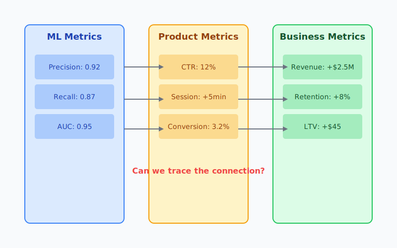
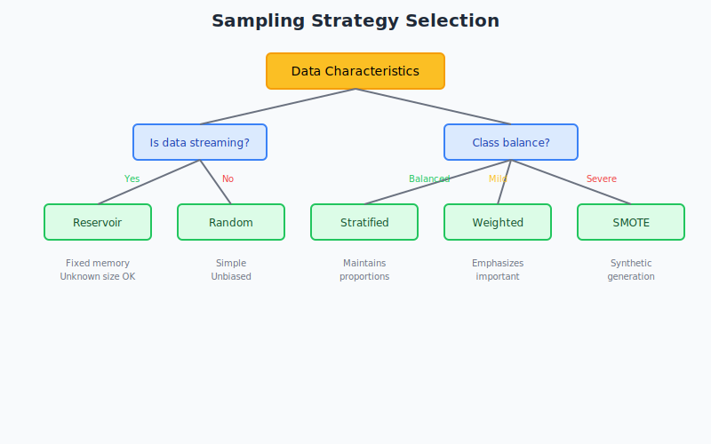

graph TD
%% Style definitions
classDef good fill:#bbf0c9,stroke:#2e7d32,stroke-width:2px,color:#1b5e20
classDef warn fill:#fff3cd,stroke:#ff9800,stroke-width:2px,color:#795548
classDef fail fill:#ffcdd2,stroke:#d32f2f,stroke-width:2px,color:#b71c1c
classDef impact fill:#bbdefb,stroke:#1565c0,stroke-width:2px,color:#0d47a1
classDef outcome fill:#e1bee7,stroke:#6a1b9a,stroke-width:2px,color:#4a148c
subgraph "Latency Distribution Reality"
A([User Request]):::impact --> B["P50: 50ms ✓ OK"]:::good
A --> C["P90: 100ms ✓ OK"]:::good
A --> D["P95: 200ms ⚠ Warning"]:::warn
A --> E["P99: 2000ms ✗ Fail"]:::fail
E --> F["1% Users Frustrated"]:::warn
F --> G["Negative Reviews"]:::impact
G --> H["Customer Churn"]:::outcome
end
Building Production-Ready Machine Learning Systems: A Practitioner’s Guide
This guide synthesizes years of experience building and deploying ML systems at scale, incorporating lessons learned from both successes and failures. It draws from foundational works like Chip Huyen’s “Designing Machine Learning Systems” and Cathy Chen’s “Reliable Machine Learning,” while providing practical insights that only come from hands-on production experience.
Part I: Project Scoping - The Foundation of Success
The Throughput vs. Latency Trade-off
During my years deploying ML systems, I’ve learned that the transition from training to production involves a fundamental shift in priorities. During training, we optimize for throughput - processing millions of examples efficiently to extract maximum learning from our data. Time is on our side; we can afford to wait hours or days for a model to train if it means better performance.
However, once we deploy the model, latency becomes paramount. I’ve witnessed numerous cases where a model with exceptional accuracy failed in production simply because it couldn’t meet latency requirements. Customer satisfaction and conversion rates are far more sensitive to response time than to marginal improvements in prediction accuracy.
The critical insight here is that we must design for the high percentiles of latency distribution - the P90, P95, and especially P99 percentiles. A system might have a median latency of 50ms, which seems acceptable, but if the P99 latency spikes to 2 seconds, that means 1% of your users are having a terrible experience. These tail latencies often determine overall user satisfaction more than median performance.
What makes this particularly challenging is that the factors contributing to tail latencies are often different from those affecting median latency. A model might occasionally trigger expensive feature computations, hit cold caches, or encounter network congestion. These edge cases are rare enough to not affect your median metrics but common enough to frustrate hundreds or thousands of users daily.
In practice, I’ve found that teams often need to make painful trade-offs. That ensemble of deep learning models might improve accuracy by 3%, but if it pushes your P99 latency above acceptable thresholds, you’re better off with a simpler model that responds quickly. Users rarely notice a slightly less accurate recommendation, but they always notice when the page takes forever to load.
Mapping ML Metrics to Business Metrics

One of the most persistent challenges I’ve encountered is the disconnect between ML metrics and business value. It’s common to focus intensely on improving model accuracy, only to discover that a 2% improvement in AUC has negligible impact on business KPIs. This disconnect often leads to frustration on both sides - data scientists feel their improvements aren’t valued, while business stakeholders don’t understand why the ML team is celebrating.
The root cause is that ML metrics are proxies, not direct measurements of business value. A recommender system’s NDCG score doesn’t directly translate to revenue. A fraud model’s precision doesn’t immediately map to losses prevented. The relationship between these metrics is complex and often non-linear.
I learned this lesson painfully when working on a content recommendation system. We spent three months improving our ranking model’s AUC from 0.78 to 0.82 - a significant achievement from an ML perspective. However, when we deployed it, the impact on user engagement was barely measurable. Why? Because the improvement was primarily in ranking items 50-100, but users rarely scrolled past the first 20 items. We were optimizing the wrong part of the problem.
The solution is establishing clear, measurable mappings from the outset. This requires close collaboration with business stakeholders to understand:
- What user behavior drives business value?
- How does model output influence that behavior?
- What’s the sensitivity of business metrics to ML improvements?
In some cases, this connection is straightforward - improving click-through rate directly increases ad revenue. But often, ML is just one component in a complex process, making attribution difficult. For example, in a loan approval system, the ML model might determine creditworthiness, but the final approval depends on multiple factors including regulatory requirements, available capital, and business strategy. Improving the model’s accuracy might have minimal impact if other constraints dominate.
The Four Pillars of ML System Requirements
Through painful experience, I’ve learned that production ML systems must satisfy four critical requirements that are often afterthoughts during development:
Reliability goes far beyond simple uptime. It means the system must perform correctly even in the face of failures - and failures will happen. Data pipelines break, features become unavailable, models corrupt, and services timeout. Every component needs a fallback strategy.
Consider what happens when your feature store becomes unavailable. Can your system continue with cached features? Can it fall back to a simpler model that requires fewer features? Or will your entire service go down, taking your product with it? I’ve seen too many systems where a single point of failure in the ML pipeline caused complete service outages.
The key is graceful degradation. When the primary model fails, fall back to a simpler model. When that fails, use business rules. When those fail, return cached predictions. And always, always have a “safe” default that won’t cause harm even if it’s not optimal.
Scalability must be considered along three dimensions simultaneously. First, model complexity - your system should handle everything from logistic regression to large neural networks without architectural changes. Second, request volume - from thousands to millions of QPS. Third, number of models - from a single model to hundreds serving different use cases.
The challenge is that these dimensions interact. A system designed for one complex model might fail when serving hundreds of simple models. A architecture optimized for high-throughput batch predictions might crumble under real-time request load. I’ve seen teams forced to completely rebuild their serving infrastructure because they didn’t anticipate these scaling challenges.
Maintainability is where many ML systems fail catastrophically. Unlike traditional software, ML systems have multiple moving parts that can drift independently - data distributions, feature definitions, model weights, and business requirements. Everything must be versioned: code, data, models, configurations, and even the features themselves.
Documentation is critical but often neglected. Six months from now, will anyone remember why that particular feature transformation was necessary? Why that specific threshold was chosen? Why the model was retrained on that particular date? Without comprehensive documentation and versioning, ML systems become unmaintainable black boxes that teams are afraid to touch.
Adaptability reflects the reality that ML systems operate in dynamic environments. Data distributions shift, user behavior evolves, and business requirements change. Your system must respond quickly to these changes without requiring complete rebuilds.
This means modular design where components can be updated independently. It means comprehensive monitoring to detect when adaptation is needed. It means automated retraining pipelines that can respond to drift. And it means A/B testing infrastructure to safely roll out changes.
Framing Complex Classification Problems
For multiclass classification with numerous classes, I’ve found hierarchical classification to be remarkably effective. Instead of trying to classify directly into hundreds or thousands of categories, we first classify into major groups, then use specialized models for subclasses. This approach offers several advantages that aren’t immediately obvious.
First, it allows you to use different features at different levels. Top-level classification might use broad, general features, while leaf-level classification can use highly specific features relevant only to that subdomain. This is particularly valuable when dealing with heterogeneous categories where a single feature set can’t effectively distinguish all classes.
Second, it provides natural confidence boundaries. If the top-level classifier isn’t confident, you can stop there rather than making an unreliable fine-grained prediction. This is crucial in production systems where wrong predictions at a high level are far more acceptable than confident but incorrect specific predictions.
Third, it makes the system more maintainable and debuggable. When errors occur, you can quickly identify which level of the hierarchy is failing. You can update models for specific subcategories without retraining the entire system. And you can add new categories by training new leaf models without touching the rest of the hierarchy.
As a rule of thumb, each class needs at least 100 samples for the model to learn meaningful patterns. When you have thousands of classes, this requirement becomes a significant data challenge. Hierarchical classification helps by allowing you to pool data at higher levels, ensuring adequate samples for training even when leaf categories are sparse.
graph TD
A1[Flat: Input Image] --> B1[Single Model: 10,000 classes directly]
B1 --> C1[Output: Class 7832 - iPhone 13]
B1 -.-> D1[Problem: Need 1M samples]
B1 -.-> E1[Problem: One feature set for all]
A2[Hierarchical: Input Image] --> B2[Level 1: 10 categories]
B2 -->|Confident| C2[Level 2: 50 types]
C2 -->|Confident| D2[Level 3: 200 models]
D2 --> E2[Output: iPhone 13]
B2 -->|Not Confident| F2[Stop Early: Return Electronics]
B2 -.-> G2[Benefit: 100K samples total]
C2 -.-> H2[Benefit: Category-specific features]
D2 -.-> I2[Benefit: Model-specific features]
style B1 fill:#fee2e2
style B2 fill:#dbeafe
style C2 fill:#dcfce7
style D2 fill:#fef3c7
style F2 fill:#f3e8ff
For multilabel classification, the choice between building separate binary classifiers versus a single multilabel model depends on label correlations. If labels are independent (rare in practice), separate classifiers offer more flexibility - you can update, debug, and optimize each independently. If labels are correlated (the common case), a single model can capture these relationships, leading to better overall performance.
Handling Multiple Objectives
When faced with multiple objectives, resist the temptation to create a single model that optimizes everything. I’ve consistently found that decoupling objectives leads to better outcomes. This isn’t just about model performance - it’s about system flexibility and business alignment.
Consider an e-commerce recommendation system that needs to optimize for relevance, engagement, and revenue. A single model trying to balance all three will inevitably make compromises that satisfy no one. The relevance team wants accurate predictions. The engagement team wants items that keep users browsing. The revenue team wants high-margin products promoted.
Instead, train separate models for each objective, then combine their outputs using weighted scores. This approach allows you to:
- Adjust business priorities without retraining models
- Update individual models without affecting others
- Debug issues in specific objectives independently
- Use different model architectures optimized for each task
The key is that weights can be tuned based on business context. During sales periods, increase revenue weight. For new users, prioritize engagement. For power users, focus on relevance. This flexibility is impossible with a monolithic model.
# pseudocode
MultiObjectiveScoring:
scores = {}
for each objective in [relevance, engagement, revenue]:
scores[objective] = models[objective].predict(item)
weights = get_dynamic_weights(user_context, business_context)
final_score = weighted_sum(scores, weights)
apply_business_rules(final_score, item)
return final_scorePart II: Data - The Foundation of Everything
Understanding Data Types and Their Implications
The source and nature of your data fundamentally determines your system’s capabilities and limitations. This is a lesson I learned the hard way when building a user preference model that relied heavily on third-party demographic data. When our data provider changed their methodology without notice, our model’s performance degraded overnight. We had built our castle on sand.
First-party data collected directly from your customers is gold - it’s specific to your use case and directly reflects user behavior. However, it’s also the messiest data you’ll work with. Users provide inconsistent information, leave fields blank, use fake emails like “asdf@asdf.com”, and behave in ways that defy logic. I once discovered that 15% of our users claimed to be born on January 1st - not because of an unusual demographic phenomenon, but because our date picker defaulted to that date and users didn’t bother changing it.
The key with first-party data is defensive processing. Never trust user input. Always validate, clean, and have fallbacks for missing or corrupted data. Build systems that expect chaos and handle it gracefully.
Second-party data from partners comes with its own challenges. Different companies have different definitions for seemingly standard fields. What one partner calls “active user” might mean “logged in within 30 days” while another means “made a purchase within 90 days”. These semantic differences can destroy model performance if not carefully handled.
I’ve learned to treat partner data as unreliable by default. Build validation layers that check for schema changes, monitor for distribution shifts, and alert when data quality degrades. And always, always have a fallback plan for when partner data becomes unavailable.
Third-party data provides broad coverage but raises privacy, legal, and quality concerns. That demographic dataset you purchased might be two years out of date. That behavioral data might be biased toward certain populations. And that social media feed might disappear tomorrow when API terms change.
The lesson is clear: the closer data is to your use case, the more valuable but also more chaotic it becomes. Build your systems accordingly.
Data Passing Modes and Architecture Decisions
The choice of data passing architecture fundamentally constrains your system’s capabilities. This isn’t just a technical decision - it determines what kinds of features you can use, how fresh your predictions can be, and how complex your models can become.
Database-based approaches are conceptually simple - store features in a database, query when needed. This works well for prototypes and systems with relaxed latency requirements. But I’ve seen too many teams hit a wall when they try to scale this approach. Database queries add latency, connection pooling becomes a bottleneck, and suddenly your ML service is spending more time waiting for data than making predictions.
The hidden cost of database-based approaches is operational complexity. Your ML service now depends on database availability, network stability, and query performance. A slow query doesn’t just delay one prediction - it can cascade into timeouts throughout your system.
Service-based architectures using REST or RPC are the most common in production systems I’ve built. They offer good flexibility and reasonable performance. You can scale services independently, use different languages for different components, and evolve APIs over time.
The challenge with service-based approaches is managing the dependency graph. Your prediction service might call a feature service, which calls a user service, which queries a database. Each hop adds latency and potential failure points. I’ve debugged systems where a simple prediction required 20+ service calls, turning what should be a 10ms operation into a 500ms odyssey.
This request-driven (microservice) architecture works well for applications that rely more on logic than data. If your features are relatively simple and your model is the complex part, this architecture makes sense.
Real-time transport using systems like Kafka is essential for data-heavy applications requiring stream processing. This event-driven architecture excels when you need to process high-volume data streams, compute real-time features, or react quickly to user actions.
The power of streaming architectures is that they decouple data production from consumption. Your feature computation doesn’t need to wait for prediction requests. Features can be pre-computed and cached, ready for instant use. This is particularly valuable for expensive features that would be impractical to compute at request time.
However, streaming architectures come with significant operational overhead. You need to manage Kafka clusters, handle out-of-order events, deal with late-arriving data, and ensure exactly-once processing. I’ve seen teams spend more time managing the streaming infrastructure than developing ML models.
Feature Types: Batch vs Streaming
Understanding the distinction between batch and streaming features is crucial for system design. This isn’t just about how features are computed - it’s about fundamental trade-offs between complexity, freshness, and cost.
Batch features (static features) are computed periodically on large datasets. Examples include user lifetime value, historical purchase patterns, or demographic aggregates. These features can be arbitrarily complex because computation time isn’t a constraint. You can run expensive joins, complex aggregations, or even train auxiliary models to generate features.
The beauty of batch features is their stability and efficiency. Computed once, used many times. The challenge is staleness - by definition, batch features are always somewhat out of date. I’ve seen recommendation systems fail because they relied on batch features updated daily, missing rapid changes in user interest.
Streaming features (dynamic features) capture recent behavior and current context. Examples include “items viewed in the last hour” or “current location”. These features must be simple enough to compute within tight latency budgets, typically using sliding windows or simple counters.
The power of streaming features is their freshness - they can capture user intent in real-time. But this comes at a cost. Streaming infrastructure is complex, debugging is difficult, and ensuring consistency between training and serving is challenging.
Most production systems I’ve built use both types, combining rich historical context from batch features with timely signals from streaming features. The art is in choosing which features belong in which category.
Part III: Sampling Methods and Data Collection
Choosing the Right Sampling Strategy

The choice of sampling method can make or break your model’s performance. Through painful experience, I’ve learned that different scenarios require fundamentally different approaches, and the “obvious” choice is often wrong.
Nonprobability sampling, such as selecting the most recent data, is simple but dangerous. I once worked on a fraud detection model where we trained on the most recent month of data (because it was convenient). The model performed terribly in production. Why? Fraud patterns are seasonal, and we had trained on December data - when holiday shopping created unusual patterns that didn’t generalize to other months.
Random sampling provides unbiased estimates but can miss rare events. In a system processing millions of transactions where 0.01% are fraudulent, random sampling might not capture enough fraud cases to train an effective model. You need targeted strategies for imbalanced problems.
Stratified sampling ensures representation across important segments. This is essential when you have distinct user groups or when certain classes are rare. But be careful - stratifying on too many dimensions can create tiny strata that are essentially meaningless.
Weighted sampling allows you to emphasize certain examples. High-value customers might be weighted more heavily, or recent data might receive higher weights. The challenge is choosing appropriate weights - get them wrong, and you’ll introduce bias that degrades performance.
Reservoir sampling is a beautiful algorithm for sampling from streams of unknown size. You maintain a fixed-size reservoir, randomly replacing elements as new data arrives. This is essential for production systems processing continuous data streams where you can’t load everything into memory.
Importance sampling helps when your training distribution doesn’t match your target distribution. Maybe you have lots of data from one region but need to predict for another. Importance sampling can reweight examples to approximate the target distribution, but it requires careful implementation to avoid high variance.
The key insight is that sampling isn’t just about reducing data volume - it’s about ensuring your training data represents the problem you’re actually trying to solve.
Extracting Labels from User Feedback
User feedback progresses through stages, each with different characteristics. Understanding these stages is crucial for building effective training pipelines.
At the highest volume but weakest signal level, we have implicit feedback - views, hovers, scroll depth. These signals are immediate and plentiful but noisy. A user might view an item because it was at the top of the page, not because they were interested.
Next comes engagement feedback - clicks, time spent, shares. These provide moderate signal strength with reasonable volume. A click indicates interest, but not necessarily satisfaction. Time spent might indicate engagement or confusion.
Finally, we have explicit feedback - ratings, purchases, reviews. These provide the strongest signal but at the lowest volume and with significant delay. A purchase is a clear positive signal, but it might happen days after the initial recommendation.
The challenge is balancing signal quality against feedback speed. Waiting for explicit feedback gives you accurate labels but delays model updates. Using implicit feedback allows rapid adaptation but with noisier labels.
B[“Volume: High: 0s: High”]:::card –> D[“Volume: Medium: Minutes: Medium”]:::card –> F[“Volume: Low: Days: Low”]:::card –>
graph TD
subgraph T["Feedback Maturity Funnel: Speed vs. Quality Trade-offs"]
direction LR
A[Implicit]:::implicit --> B[Volume: High\nDelay: Instant\nSignal: Weak]:::card
B --> C[Engagement]:::engagement
C --> D[Volume: Medium\nDelay: Minutes-Hours\nSignal: Moderate]:::card
D --> E[Explicit]:::explicit
E --> F[Volume: Low\nDelay: Days-Weeks\nSignal: Strong]:::card
G[Fast updates\nNoisy labels]:::note -.-> A
H[Slow updates\nAccurate labels]:::note -.-> E
end
classDef implicit fill:#dbeafe,stroke:#2563eb,color:#1e3a8a;
classDef engagement fill:#fef3c7,stroke:#d97706,color:#92400e;
classDef explicit fill:#dcfce7,stroke:#15803d,color:#065f46;
classDef card fill:#ffffff,stroke:#94a3b8,color:#0f172a,stroke-dasharray:3 3;
classDef note fill:#faf5ff,stroke:#7c3aed,color:#4c1d95,stroke-dasharray:4 4;
graph LR
subgraph T["Mapping Feedback Signals to Training Pipelines"]
direction LR
U[User Activity Stream]:::user --> A[Implicit\nviews, hovers, scroll]:::implicit
U --> C[Engagement\nclicks, dwell, shares]:::engagement
U --> E[Explicit\nratings, purchases, reviews]:::explicit
A -->|online / streaming| M1[Online Learner\nrapid updates]:::fast
C -->|mini-batch hourly| M2[Nearline Trainer\nrolling updates]:::mid
E -->|batch daily/weekly| M3[Batch Trainer\nground-truth]:::slow
M1 --> S[Model Registry]:::serve
M2 --> S
M3 --> S
S --> P[Production Model\nblended signals]:::prod
F1[Pros: fast adaptation\nCons: noisy labels]:::note -.-> A
F2[Pros: balanced\nCons: ambiguous intents]:::note -.-> C
F3[Pros: strong labels\nCons: slow & sparse]:::note -.-> E
end
classDef user fill:#e0f2fe,stroke:#0284c7,color:#083344;
classDef implicit fill:#dbeafe,stroke:#2563eb,color:#1e3a8a;
classDef engagement fill:#fef3c7,stroke:#d97706,color:#92400e;
classDef explicit fill:#dcfce7,stroke:#15803d,color:#065f46;
classDef fast fill:#f0f9ff,stroke:#38bdf8,color:#0c4a6e;
classDef mid fill:#f5f3ff,stroke:#8b5cf6,color:#2e1065;
classDef slow fill:#fff7ed,stroke:#fb923c,color:#7c2d12;
classDef serve fill:#f1f5f9,stroke:#94a3b8,color:#0f172a;
classDef prod fill:#ecfccb,stroke:#65a30d,color:#1a2e05;
classDef note fill:#faf5ff,stroke:#7c3aed,color:#4c1d95,stroke-dasharray:4 4;
I’ve found success using multiple feedback types in cascade. Use implicit signals for rapid adaptation and exploration. Use engagement signals for short-term model updates. Use explicit signals for periodic retraining and calibration. This multi-timescale approach balances adaptability with accuracy.
Part IV: Data Labeling Strategies
When You Have Limited or No Labels
Production ML often faces label scarcity. Getting high-quality labels is expensive, time-consuming, and sometimes impossible. Over the years, I’ve developed strategies to build effective models even with limited labeled data.
Weak supervision has been transformative for many projects. Instead of manually labeling thousands of examples, you write labeling functions that encode heuristics, patterns, or external knowledge. These functions might be individually noisy, but when combined intelligently (using tools like Snorkel), they can generate surprisingly accurate labels.
I used this approach for a content moderation system where manual labeling was prohibitively expensive. We wrote labeling functions for obvious patterns (profanity, all caps), behavioral signals (reported by multiple users), and external knowledge (known spam domains). No single function was perfect, but together they generated labels accurate enough to train an effective model.
The key insight is that labeling functions can be noisy and conflicting. The magic is in learning how to combine them, weighing more reliable functions more heavily and resolving conflicts intelligently.
Semi-supervision leverages limited labeled data to generate more labels. The simplest approach is self-training: train a model on labeled data, use it to label unlabeled data with high confidence, retrain on the expanded dataset. This can work remarkably well when you have a reasonable initial model and lots of unlabeled data.
But be careful of confirmation bias - the model will amplify its own mistakes. I’ve seen self-training spirals where models became increasingly confident in incorrect patterns. Always validate on held-out labeled data and stop if performance degrades.
Transfer learning has become my go-to approach for limited data scenarios. Start with a model pre-trained on a related task, then fine-tune on your specific problem. This works because many patterns (edge detection in images, syntax in text) transfer across domains.
The surprise is how little task-specific data you need. I’ve built production models with just hundreds of labeled examples by fine-tuning large pre-trained models. The pre-trained model provides a rich feature representation; you just need to adapt it to your specific task.
Active learning strategically selects which examples to label. Rather than randomly sampling, focus on examples where labels would be most valuable. This might be uncertain examples where the model has low confidence, examples near decision boundaries, or representative examples from clusters of unlabeled data.
The challenge with active learning is the feedback loop - selecting informative examples requires a reasonable model, but building that model requires labels. Start with a small random sample, then iteratively select and label the most informative examples. I’ve seen 10x reductions in labeling effort using active learning.
Part V: Class Imbalance - A Production Reality
Understanding the Imbalance Spectrum
Class imbalance is ubiquitous in production systems. Fraud is rare. Purchases are uncommon. Clicks are infrequent. Most real-world problems have some degree of imbalance, and how you handle it can make the difference between success and failure.
The fundamental challenge is that standard algorithms optimize for overall accuracy, which means predicting the majority class. A fraud detection model that never predicts fraud might achieve 99.9% accuracy but be completely useless. The model hasn’t learned to detect fraud - it’s learned that fraud is rare.
The degree of imbalance determines your strategy. At mild imbalance (less than 1:10), simple techniques like class weights or threshold adjustment often suffice. The model can still learn patterns for both classes; it just needs encouragement to pay attention to the minority class.
At moderate imbalance (1:10 to 1:100), you need more sophisticated approaches. The minority class doesn’t have enough examples for the model to learn robust patterns. Techniques like SMOTE (creating synthetic examples) or ensemble methods become necessary.
At severe imbalance (1:100 to 1:1000), you’re approaching anomaly detection territory. Traditional classification approaches start breaking down. The minority class is so rare that it’s easier to model the normal class and flag deviations.
At extreme imbalance (beyond 1:1000), you need fundamental architectural changes. Pure ML approaches often fail. You might need rule-based filters to handle obvious cases, cascaded models to progressively refine predictions, or human-in-the-loop systems for final validation.
The critical insight is that imbalance isn’t just about data - it’s about the problem structure. If classes are linearly separable, even extreme imbalance is manageable. But for complex, overlapping distributions, even mild imbalance can be catastrophic.
Moreover, the cost of errors is rarely symmetric. Missing a fraudulent transaction might cost $1000. Flagging a legitimate transaction might cost $10 in customer service time. This asymmetry must be built into your optimization process.
Data-Level Solutions
When facing imbalanced data, the first instinct is often to balance it through sampling. While this can work, each approach has trade-offs that aren’t always obvious.
Undersampling the majority class is simple and fast - just throw away data until classes are balanced. But you’re discarding potentially valuable information. Those majority class examples might contain important patterns, edge cases, or rare subcategories. I’ve seen models fail in production because undersampling removed critical examples that defined the decision boundary.
Oversampling the minority class preserves all information but risks overfitting. Simply duplicating minority examples doesn’t add information - it just makes the model more confident in patterns it’s already learned. This can lead to models that perform well on validation data (which has the same duplicated examples) but fail on truly new data.
SMOTE (Synthetic Minority Over-sampling) creates synthetic examples by interpolating between minority class examples. This can work well for continuous features but requires care with categorical data or discrete features. The synthetic examples might not be realistic - imagine interpolating between two user profiles or two text documents.
Tomek links removes borderline majority class examples that might confuse the classifier. These are majority class examples whose nearest neighbor is from the minority class. Removing them can create cleaner decision boundaries, but be careful - those borderline cases might be important in production.
The approach I’ve found most effective is dynamic sampling: train initially on balanced data to learn patterns, then fine-tune on the natural distribution to calibrate predictions. This two-phase approach combines the pattern-learning benefits of balanced training with the calibration advantages of natural distributions:
# pseudocode
DynamicTraining:
Phase1:
balanced_data = balance_classes(training_data)
model.train(balanced_data, focus="patterns")
Phase2:
reduce_learning_rate(0.1x)
model.fine_tune(original_data, focus="calibration")Algorithm-Level Solutions
Sometimes it’s better to modify the learning algorithm rather than the data. These approaches can be more principled and often work better for severe imbalance.
Cost-sensitive learning directly incorporates the real-world cost of different errors. Instead of treating all misclassifications equally, you define a cost matrix that reflects business reality. This is particularly powerful when you have concrete costs for different types of errors.
Class-balanced loss weights each sample inversely proportional to its class frequency. This effectively tells the model “minority class examples are more important”. The challenge is choosing appropriate weights - too high, and the model overfits to the minority class; too low, and it ignores it.
Focal loss is elegant in its simplicity - it down-weights easy examples and focuses on hard examples. Since majority class examples are often easy (the model quickly learns to predict them), focal loss naturally balances attention between classes. I’ve seen focal loss work remarkably well for extreme imbalance where other techniques failed.
The key is that different techniques work for different problems. Ensemble methods can be powerful - train multiple models on different balanced subsets, then combine predictions. This provides robustness and can capture different aspects of the minority class.
Part VI: Data Augmentation Strategies
Augmentation Techniques That Work
Data augmentation can dramatically improve model performance, especially with limited data. But not all augmentation is created equal. The key is creating variations that could plausibly occur in production while preserving label integrity.
Label-preserving transformations modify data without changing its meaning. For images, this includes rotation, flipping, cropping, and color adjustment. For text, it includes synonym replacement, paraphrasing, or word reordering (where syntax permits). For time series, it includes time warping, scaling, or adding noise.
The critical requirement is that transformations reflect real-world variations. Rotating an image of a face might make sense for a face detection model but not for a facial recognition model (where orientation matters). Adding noise to financial data might simulate measurement error but shouldn’t change transaction amounts.
Perturbation adds controlled noise while preserving labels. In NLP, BERT’s approach of randomly masking 15% of tokens (with 10% replaced by random tokens) teaches robust representations. The model learns to use context rather than relying on specific words.
For structured data, dropout during training serves as augmentation - randomly zeroing features forces the model to learn redundant patterns. This is particularly valuable when features might be missing in production.
Data synthesis creates entirely new examples. Mixup interpolates between examples - both features and labels. This teaches the model smooth transitions between classes and can improve calibration. But be careful with discrete features or when interpolation doesn’t make semantic sense.
Template-based generation can be powerful for specific domains. In NLP, you might have templates with slots that can be filled with different entities. In time series, you might combine patterns from different examples. The challenge is ensuring synthetic data remains realistic.
The key insight is that augmentation should reflect your production distribution. If your model will see noisy images, train with noise. If users make typos, train with typos. If sensors fail occasionally, train with missing data. Augmentation isn’t just about more data - it’s about the right data.
Part VII: Feature Engineering - The Highest Leverage Activity
Handling Missing Values in Production
Missing values are ubiquitous in production systems, and handling them incorrectly can destroy model performance. But here’s the critical insight: not all missing values are actually missing. Many systems use sentinel values like -999, empty strings, “N/A”, or dates like “1900-01-01” to represent missing data. Your first task is identifying what “missing” actually means in your system.
Understanding why values are missing is crucial for proper handling. Missing Not at Random (MNAR) occurs when the missingness is related to the value itself. High-income individuals might not disclose their income. Certain age groups might skip profile fields. This missingness pattern itself contains information - the fact that income is missing might indicate high income.
Missing at Random (MAR) happens when missingness relates to other observed variables but not the missing value itself. Younger users might skip certain fields regardless of what those values would be. Mobile users might have more missing data due to form complexity. You can often predict these missing values from other features.
Missing Completely at Random (MCAR) is true randomness with no pattern - a network glitch causes random data loss, or users randomly forget to fill fields. This is the easiest to handle but rarest in practice. If you think your missing data is MCAR, look harder - there’s usually a pattern.
The production challenge is that missing patterns can change over time. A system update might change which fields are required. A new user interface might make certain fields easier to skip. Your missing value strategy must be robust to these changes.
For handling missing values, I’ve learned several hard lessons:
Never delete columns with missing values unless they’re almost entirely missing. That feature with 30% missing values might be highly predictive for the 70% where it’s present. Instead, use missing indicators - binary features that flag when a value was missing. Often, the fact that a value is missing is more informative than the value itself.
Be extremely careful with row deletion. Dropping rows with missing values can introduce severe bias if the missingness isn’t completely random. You might be systematically removing certain user segments or behavior patterns.
Simple imputation (median/mode) works surprisingly well for many cases, but always add a missing indicator. The imputed value allows the model to function; the indicator captures the information in missingness.
Predictive imputation - using other features to predict missing values - can work well but requires careful implementation. You’re essentially building a model within a model. Make sure your imputation model is trained only on training data to avoid leakage.
The key is ensuring consistency between training and serving. If you compute median values for imputation during training, those exact values must be used in production - not medians computed from production data.
Feature Scaling in Production
Scaling is critical for many algorithms - neural networks, SVMs, and distance-based methods all require normalized features. But production scaling is far more complex than the textbook StandardScaler approach.
The fundamental challenge is that statistics computed during training can become stale. If you standardize using mean and standard deviation from training data collected six months ago, but user behavior has shifted, your scaling might be wildly off. Features that should be in [-1, 1] might now range to [-10, 10].
Different distributions require different scaling approaches:
- Normal distributions: Standardization (z-score) works well
- Uniform distributions: Min-max scaling to [0, 1]
- Heavy-tailed distributions: Robust scaling using median and IQR
- Power-law distributions: Log transformation first
- Unknown distributions: Rank transformation or quantile normalization
But here’s what they don’t teach you in courses: outliers will destroy your scaling. A single extreme value can shift your mean dramatically or expand your min-max range to make all other values nearly identical. Always clip outliers before computing scaling statistics - typically at the 1st and 99th percentiles.
The production solution I’ve converged on:
- Detect distribution type for each feature
- Apply appropriate transformation (log for skewed, etc.)
- Clip outliers at reasonable percentiles
- Compute robust statistics (median/MAD rather than mean/std)
- Monitor for distribution shifts
- Trigger retraining when statistics become stale
Discretization and Encoding
Discretization (binning) converts continuous features into categorical ones. While this loses information, it can help models learn non-linear patterns and can make features more robust to outliers. But choosing bin boundaries is critical and often done poorly.
Equal-width bins are rarely appropriate - you’ll end up with some bins empty and others overcrowded. Quantile-based bins ensure equal populations but might group different values together. Domain-specific bins based on business logic often work best.
Categorical encoding is where many production systems fail. One-hot encoding seems simple until you have a categorical feature with 10,000 values, exploding your feature space. Target encoding (replacing categories with their mean target value) seems clever until you realize it causes severe overfitting and leakage.
The approach that’s worked best for me is hashing (the hashing trick). Map categories to a fixed number of buckets using a hash function. This handles unknown categories gracefully (crucial for production), keeps dimensionality bounded, and works reasonably well even with collisions if you have enough buckets. The key is choosing the right number of buckets - too few and collisions hurt performance; too many and you’re back to the sparse matrix problem.
Feature Crossing
Feature crossing - combining two or more features - helps models learn non-linear relationships. The classic example is crossing latitude and longitude to learn location-specific patterns. But feature crossing in production is fraught with challenges.
The combinatorial explosion is real. If you have two categorical features with 100 values each, their cross has 10,000 possible values. Most will be rare or unseen in training. Your model now needs far more data to learn patterns.
The solution is selective crossing. Only cross features where interactions make business sense. Use domain knowledge to identify promising crosses. And always monitor the cardinality - if a cross produces too many unique values, consider hashing or grouping.
Part VIII: Data Leakage - The Silent Killer
Common Causes and Prevention
Data leakage has caused more production failures I’ve witnessed than any other issue. It’s insidious because it makes you feel successful right until the moment of deployment, when everything falls apart.
Temporal leakage is the most common and dangerous form. Using future information to predict the past seems obviously wrong, yet it happens constantly. That feature “days_since_last_purchase”? If computed after the target date, it’s leaking information. That aggregate “user_lifetime_value”? If it includes the transaction you’re trying to predict, it’s leakage.
I once debugged a churn prediction model with 99% accuracy. The team was ecstatic until deployment, when accuracy dropped to 60%. Investigation revealed a feature called “account_status” that was computed after churn had occurred. The model had learned to identify customers who had already churned, not those who were about to.
Always use time-based splits for temporal problems. Random splitting on time-correlated data virtually guarantees leakage. Your validation set should be from a time period after your training set, mimicking the production scenario where you predict the future from the past.
Preprocessing leakage occurs when you compute statistics on your entire dataset before splitting. Scaling features using statistics from the full dataset? That’s leakage. Selecting features based on correlation with the target in the full dataset? Leakage. The test set information has influenced your training process.
The rule is simple: compute statistics only on training data, then apply those fixed statistics to test data. This includes scaling parameters, imputation values, and even vocabulary for text processing.
Duplicate and near-duplicate samples across train and test sets compromise validation. This is particularly problematic with user-generated content where the same item might appear multiple times with slight variations. Always check for exact and fuzzy duplicates before splitting.
Group leakage occurs when correlated samples span train and test sets. Multiple images of the same person should all be in either train or test, never split. Multiple transactions from the same user on the same day should stay together. The model might learn to identify users rather than patterns.
Detection and Prevention Strategies
The first line of defense is feature importance analysis. Suspiciously important features often contain leakage. If one feature dominates all others, investigate immediately. I’ve found features that were transformations of the target, encodings that included future information, or aggregates that contained the prediction itself.
A powerful technique is building a model to predict whether a sample belongs to train or test set. If this model succeeds (AUC > 0.7), you have distribution differences that might indicate leakage or other problems. The features most important for distinguishing train from test are your suspects:
# pseudocode
LeakageDetection:
combined_data = concat(train_data.add_column("is_train", 1),
test_data.add_column("is_train", 0))
model = train_classifier(combined_data.features, combined_data.is_train)
if model.auc > 0.7:
suspicious_features = model.get_top_features(n=5)
investigate(suspicious_features)Feature coverage analysis reveals distribution mismatches. Check whether feature values in test set appear in training set. Low overlap might indicate temporal patterns, data drift, or leakage. If a categorical feature has values in test that never appear in training, something’s wrong.
Ablation studies can reveal leakage. Remove features one at a time and retrain. If removing a single feature causes massive performance drops, it might contain leaked information. Real predictive features rarely carry that much unique information.
The ultimate test is temporal validation. Take recent data and try to reproduce your validation scores. If production performance is far worse than validation, leakage is a prime suspect.
Part IX: Model Development Best Practices
The Critical Role of Baselines
Never underestimate the power of simple baselines. They provide calibration, sanity checks, and often surprising competition to complex models. More importantly, they reveal whether you actually need ML for your problem.
Start with the simplest possible baseline - random predictions for classification, mean/median for regression. This establishes the noise floor. If you can’t beat random, something’s fundamentally wrong.
Next, try frequency-based baselines. Predict the most common class. Use historical averages. These capture base rates and temporal patterns. I’ve seen teams spend months on deep learning only to barely beat “predict yesterday’s value.”
Then implement simple heuristics based on domain knowledge. For fraud detection, flag transactions over certain amounts. For churn prediction, flag users who haven’t logged in recently. These rules, while simple, often capture the most obvious patterns and can be surprisingly effective.
Finally, try simple ML models - logistic regression, decision trees, Random Forest. These provide a benchmark for complex models. If your neural network only improves on Random Forest by 1%, is the added complexity worth it?
The uncomfortable truth is that simple baselines often win in production. They’re faster, more interpretable, more robust, and easier to maintain. They don’t overfit as easily and degrade more gracefully. Unless your complex model significantly outperforms simple baselines, stick with simplicity.
Comprehensive Evaluation Beyond Accuracy
Production evaluation must go far beyond aggregate metrics on held-out sets. A model that performs well on average might fail catastrophically on critical segments or under common production conditions.
Calibration is crucial but often ignored. If your model outputs probabilities, they should match reality. When your model says “70% probability of fraud,” it should be right 70% of the time. Most models require post-hoc calibration - isotonic regression or Platt scaling - to produce reliable probabilities.
Why does calibration matter? Because downstream systems make decisions based on these probabilities. Risk thresholds, business logic, and human reviews all depend on accurate probability estimates. A poorly calibrated model might trigger too many false alarms or miss critical events.
Robustness testing verifies model stability. Add small amounts of noise to inputs and verify predictions remain stable. If tiny perturbations cause dramatic prediction changes, your model will fail in production where noise is everywhere - measurement errors, transmission glitches, user mistakes.
Behavioral testing ensures the model learns sensible patterns. If increasing income decreases loan approval probability, something’s wrong, regardless of validation metrics. These tests encode domain knowledge and catch when models learn spurious correlations.
Create test cases that verify expected behaviors: - Monotonicity: certain features should have monotonic relationships with the output - Symmetry: some transformations shouldn’t change predictions - Invariance: certain changes should not affect output
Slice-based evaluation examines performance on critical segments. Overall accuracy might hide failures on important subgroups: - New vs. returning users - Different geographic regions - Various device types - Edge cases and rare events
I learned this lesson when deploying a recommendation system that performed well overall but terribly for new users. We had optimized for users with rich history, inadvertently creating a cold start problem that drove away new users.
Confidence analysis examines when the model is uncertain. Can you identify predictions the model is unsure about? These might need human review or additional features. A model that’s confidently wrong is dangerous; a model that knows when it doesn’t know is valuable.
Part X: Model Deployment Strategies
Online vs Batch Prediction Trade-offs
The choice between online and batch prediction fundamentally shapes your architecture and capabilities. This isn’t just about latency - it affects feature freshness, model complexity, operational costs, and system reliability.
Batch prediction seems attractive: pre-compute all predictions periodically, store them, serve from a simple lookup table. No latency concerns, complex models are fine, feature computation can be expensive. We used this for a product recommendation system, regenerating recommendations nightly.
But batch prediction has hidden costs. Storage requirements explode with the number of users and items. Predictions become stale - a user who browses in the evening gets recommendations based on morning behavior from yesterday. And you waste resources computing predictions that are never used.
The staleness problem is worse than it appears. User intent can change rapidly. Breaking news affects content preferences immediately. Price changes alter purchase behavior instantly. By the time your batch predictions are served, they might be irrelevant.
Online prediction generates predictions on-demand, ensuring freshness. You only compute what’s needed, and predictions reflect current context. But now you’re severely constrained by latency requirements. Every millisecond counts.
The challenge with online prediction is that feature computation often dominates latency. That complex aggregate feature taking 50ms to compute? It’s not viable online. That model ensemble requiring three sequential predictions? Too slow. You’re forced to simplify both features and models.
The solution I’ve found most effective is a hybrid approach: pre-compute expensive, slowly-changing features in batch, combine with cheap, real-time features online. User history aggregates? Batch. Current session behavior? Real-time. Complex user embeddings? Batch. Current context? Real-time.
This hybrid approach requires careful orchestration but provides the best of both worlds - rich features and fresh predictions within latency budgets.
Model Compression for Production
Production deployment often requires dramatic model compression. That 1GB neural network might need to become 10MB to fit on edge devices or meet latency requirements. Compression isn’t just about size - it’s about finding the right trade-off between accuracy, latency, and resource usage.
Quantization reduces numerical precision from 32-bit floats to 8-bit integers or even binary values. This typically provides 4x compression with minimal accuracy loss. The surprise is that models are remarkably robust to reduced precision - most of those decimal places aren’t contributing to performance.
Pruning removes unnecessary connections or neurons. The shocking truth is that 90% or more of parameters can often be removed with minimal impact. Most neural networks are massively over-parameterized. Pruning not only reduces size but can improve generalization by reducing overfitting.
Knowledge distillation trains a smaller “student” model to mimic a larger “teacher” model. The student learns from the teacher’s soft predictions rather than hard labels, capturing nuanced patterns. I’ve seen 100x compression with only 2-3% accuracy loss using distillation.
The key insight is that model capacity and useful capacity are different. Your model might have millions of parameters, but only a fraction contribute meaningfully to performance. Compression removes the excess, often improving inference speed dramatically.
Cloud vs Edge Deployment
Cloud deployment offers flexibility and scalability. You can use complex models, update them instantly, and scale elastically with demand. But you pay for network latency, bandwidth costs, and privacy concerns.
The latency cost of cloud deployment is often underestimated. Network round-trip time alone might be 50ms. Add model inference, and you’re easily over 100ms. For real-time applications, this is unacceptable.
Edge deployment eliminates network latency and privacy concerns by running models on user devices. But now you’re constrained by device capabilities - limited memory, CPU instead of GPU, battery consumption concerns. Your 1GB model needs to become 5MB and run in 10ms on a phone from 2018.
The trend I’m seeing is intelligent partitioning - simple models on edge for immediate response, complex models in cloud for accuracy when latency permits. The edge model provides instant feedback; the cloud model provides accurate final results.
Part XI: System Failures and Monitoring
Understanding Failure Modes
ML systems fail in unique ways that go beyond traditional software failures. Yes, servers crash and networks fail, but ML systems have their own special failure modes that are often silent and insidious.
Software system failures are the familiar ones: servers crash, dependencies fail, deployments break. These are handled with standard SRE practices - redundancy, health checks, circuit breakers, gradual rollouts. If you don’t have these basics, ML-specific failures are the least of your problems.
ML-specific failures are more subtle and harder to detect:
Data pipeline failures that silently corrupt features. A join key changes, producing incorrect features. A timestamp format changes, shifting all time-based features. An upstream system starts sending placeholder values. The model keeps running but with garbage inputs.
Feature computation differences between training and serving. That average you computed with pandas during training? The production Scala implementation handles nulls differently. Those text tokens? The production tokenizer has subtle differences. These discrepancies accumulate into significant performance degradation.
Silent model degradation from distribution shift. The model continues to produce predictions that look reasonable but are increasingly wrong. Without ground truth labels, this can go undetected for months. I’ve seen models that degraded to random performance while still producing confident predictions.
Feedback loops where model outputs influence future inputs. A biased model creates biased training data, reinforcing its errors. Eventually, the model’s worldview becomes completely divorced from reality.
Comprehensive Monitoring Strategy
Effective monitoring requires watching multiple layers simultaneously. Each layer provides different signals, and problems often manifest across layers in complex ways.
System metrics (latency, throughput, errors, resource usage) are your first line of defense. But they only tell you that something is wrong, not what or why. A latency spike might be due to model complexity, feature computation, data volume, or infrastructure issues.
Data metrics monitor input distributions, feature statistics, and data quality. Are features within expected ranges? Are categorical features seeing new values? Is the rate of missing values increasing? These metrics provide early warning of problems.
Model metrics track prediction distributions, confidence scores, and feature importance. Sudden changes in prediction distribution might indicate data issues. Decreasing confidence might suggest the model is seeing unfamiliar inputs. Shifting feature importance might reveal data pipeline problems.
Business metrics are the ultimate arbiter. Are users clicking on recommendations? Are fraudulent transactions being caught? Is revenue increasing? These metrics ground everything in reality. A model with great technical metrics but poor business metrics is a failure.
The key is connecting metrics across layers. A drop in business metrics might trace back to a model confidence decrease, which traces back to a feature distribution shift, which traces back to a data pipeline change. Without comprehensive monitoring, you’re debugging blind.
Part XII: Data Distribution Shifts
The Inevitability of Drift
Production data is never the same as training data, and it never stays still. This isn’t a bug to be fixed but a fundamental reality to be managed. Understanding and responding to distribution shifts is critical for maintaining model performance over time.
The first challenge is that production data differs from training data in systematic ways. Training data is often historical, cleaned, and filtered. Production data is real-time, messy, and unfiltered. Training data might come from a specific time period, geography, or user segment. Production data comes from everywhere and everyone.
The second challenge is that production data continuously evolves. User behavior changes with seasons, trends, and external events. New products launch, marketing campaigns run, competitors act. The world your model operates in is dynamic.
Sometimes shifts are gradual - user demographics slowly changing, preferences gradually evolving. These are manageable with regular retraining. Sometimes shifts are sudden - a new product launch, a viral event, a system change. These require rapid response.
What makes this particularly challenging is that internal changes can masquerade as distribution shifts. A bug in data pipeline might look like feature drift. A configuration change might appear as prediction shift. Always verify the basics before assuming true drift.
Types of Distribution Shifts
Covariate shift occurs when P(X) changes but P(Y|X) remains stable. The input distribution shifts but the relationship between inputs and outputs stays constant. For example, your user demographics might change due to a marketing campaign, but user behavior given demographics remains the same.
This is often the most benign form of shift if your model has seen similar examples during training. But if the new distribution includes regions of feature space not covered in training, performance will degrade.
Label shift happens when P(Y) changes but P(X|Y) remains stable. The output distribution shifts but features given labels stay consistent. For example, the overall fraud rate might increase, but fraudulent transactions still have similar characteristics.
This affects model calibration more than accuracy. Your model might still rank predictions correctly but with wrong absolute probabilities.
Concept drift is when P(Y|X) changes - the fundamental relationship between inputs and outputs shifts. This is the most dangerous form of drift because the patterns your model learned are no longer valid. User preferences change, fraud patterns evolve, language usage shifts.
Concept drift requires model retraining or replacement. No amount of recalibration will fix a model that has learned outdated patterns.
Monitoring and Response Strategies
Detecting drift requires multiple approaches because different types manifest differently:
Statistical tests (Kolmogorov-Smirnov, Chi-square, Population Stability Index) detect feature distribution changes. But they’re sensitive to sample size - with enough data, trivial differences appear significant.
Model-based detection trains a classifier to distinguish reference from current data. If successful, distribution has shifted. This is more robust than individual statistical tests and identifies which features have changed most.
Performance monitoring tracks model metrics over time. But this requires ground truth labels, which are often delayed or unavailable in production.
The response to drift depends on its severity and business impact:
- Minor drift: Increase monitoring frequency, prepare for retraining
- Moderate drift: Trigger retraining pipeline, consider temporary adjustments
- Severe drift: Switch to fallback model, emergency retraining
- Critical drift: Revert to rule-based system, page on-call team
The key is automating responses where possible. Manual intervention doesn’t scale and introduces delays. Automated retraining pipelines that trigger on drift detection can maintain performance without human intervention.
Part XIII: Continual Learning
Training Strategy Spectrum
The choice between stateless retraining and stateful training involves fundamental trade-offs that affect system complexity, computational costs, and adaptation speed.
Stateless retraining trains from scratch on a fixed window of recent data. Every model is independent, trained on a clearly defined dataset. This provides predictability and reproducibility - you can always recreate any model version.
The advantages are significant: no risk of catastrophic forgetting, clear data lineage, simple debugging. If something goes wrong, you know exactly what data the model saw. The disadvantages are equally significant: high computational cost, slow adaptation to changes, loss of historical patterns.
Stateful training incrementally updates existing models with new data. The model evolves continuously, adapting to changes as they occur. This is computationally efficient and enables rapid adaptation.
But stateful training comes with risks. Catastrophic forgetting can cause the model to lose important historical patterns. Poisoned data can corrupt the model permanently. Debugging becomes difficult when you can’t trace exactly what influenced the model.
Most production systems I’ve built use a hybrid approach: frequent incremental updates for rapid adaptation, periodic full retraining for stability. Daily incremental updates capture recent patterns. Weekly full retraining prevents drift and forgetting. This balances adaptation speed with stability and debugging capability.
Determining Data Freshness Requirements
Not all domains require fresh data. Understanding your data’s “half-life” - how quickly patterns become stale - is crucial for setting retraining schedules.
Some domains have long half-lives. Demographic patterns change slowly. Language understanding evolves over years. Medical relationships remain stable. For these, monthly or quarterly retraining might suffice.
Other domains have short half-lives. News topics change daily. Fashion trends evolve weekly. Social media patterns shift constantly. These require daily or even hourly updates.
The way to determine your requirements is experimentation. Train models on progressively older data and evaluate on current data. Plot performance versus data age. The curve reveals how quickly patterns decay in your domain.
I’ve been surprised by these experiments. A financial fraud model I expected to need daily updates worked well with monthly retraining - fraud patterns evolved slowly. A content recommendation model I thought was stable required daily updates - user interests shifted rapidly.
Trigger Mechanisms
Retraining can be triggered by various signals, and combining multiple triggers provides robustness:
Time-based triggers provide a predictable baseline. Daily, weekly, or monthly retraining ensures models don’t become too stale. This is simple to implement and reason about.
Performance-based triggers react to degradation. When model metrics drop below thresholds, initiate retraining. This is reactive but ensures you don’t retrain unnecessarily.
Volume-based triggers respond to new data availability. After collecting N new examples, retrain to incorporate them. This works well for systems with variable data rates.
Drift-based triggers are proactive. When distribution shift is detected, retrain before performance degrades. This requires good drift detection but can prevent problems.
The key is balancing triggers. Time-based provides regularity. Performance-based ensures quality. Volume-based incorporates new patterns. Drift-based enables proactive response. Together, they create a robust retraining system.
Part XIV: Testing in Production
The Testing Hierarchy
Each testing stage catches different issues and provides different confidence levels. Skipping stages is tempting but dangerous - I’ve seen too many models fail in production because teams rushed through testing.
Holdout testing on a reserved test set validates basic model performance. This is necessary but far from sufficient. It tells you the model can learn patterns but not whether it will work in production.
Backtesting on recent historical data reveals temporal issues. Always test on the most recent data available before deployment. If your model trained on 2023 data performs poorly on 2024 data, it will fail in production.
Shadow deployment runs new models alongside production models without serving their predictions. This reveals everything - performance issues, errors, unexpected behaviors, infrastructure problems. Shadow deployment has saved me from countless disasters.
The beauty of shadow deployment is that it’s risk-free. You see exactly how the model would perform in production without affecting users. You can compare predictions, measure latency, monitor errors, and validate behavior. Always shadow deploy for at least a week before considering real deployment.
A/B testing measures actual business impact. This is the gold standard but requires careful design. Pre-determine sample size, success criteria, and test duration. Resist the temptation to peek at results or stop early.
The challenge with A/B testing ML models is that effects are often subtle and delayed. A better recommendation model might not show immediate lift but could improve long-term retention. Plan for both short-term and long-term measurement.
Canary releases gradually increase traffic to new models. Start with 1%, then 5%, 25%, 50%, monitoring carefully at each stage. Have automatic rollback triggers based on both technical and business metrics.
The power of canary releases is early detection of problems with minimal impact. If something goes wrong at 1%, you’ve affected few users and can rollback instantly.
Interleaving experiments show predictions from different models to the same user, reducing variance in measurement. This is particularly powerful for ranking systems where you can interleave results.
Part XV: Operational Excellence
The True Cost of ML Systems
Understanding the total cost of ownership for ML systems is crucial for making informed decisions. The obvious costs - compute and storage - are often dwarfed by hidden costs.
Training costs include not just compute but also: - Data labeling (often the largest expense) - Experimentation (hundreds of failed experiments per success) - Engineering time (months of development) - Infrastructure setup and maintenance
Serving costs go beyond inference compute: - Feature storage and computation - Network transfer - Caching infrastructure - Monitoring and logging - On-call support
Human costs are often the largest: - Development and maintenance - Debugging and incident response - Stakeholder communication - Documentation and knowledge transfer
The true cost of a model isn’t its inference time but the entire system around it. A complex model that requires a dedicated team might cost more than a simple model running on larger infrastructure.
Cost Optimization Strategies
For training costs, the biggest wins come from:
- Spot instances can reduce costs by 70% if you handle interruptions gracefully
- Early stopping prevents overtraining and wasted compute
- Efficient sampling reduces redundant data processing
- Transfer learning reduces training time dramatically
For serving costs, focus on:
- Caching eliminates redundant predictions
- Batching improves hardware utilization
- Model compression reduces compute and memory requirements
- Edge deployment eliminates network costs
For human costs, invest in:
- Automation to reduce manual work
- Monitoring to catch problems early
- Documentation to reduce onboarding time
- Modular design to enable independent updates
The key insight is that optimization isn’t just about reducing costs - it’s about maximizing value per dollar spent. Sometimes spending more on infrastructure to reduce human costs is the right trade-off.
Conclusion: Lessons from the Trenches
After years of building production ML systems, several truths have become self-evident:
Data quality trumps model sophistication - Every single time. I’ve never seen a complex model overcome bad data, but I’ve often seen simple models succeed with good data.
Simple models that work beat complex models that might work - Production is hostile to complexity. Every additional component is a potential failure point.
Monitoring everything is the only way to sleep at night - You can’t fix what you can’t see. Comprehensive monitoring has saved me countless times.
Users won’t wait for perfect predictions - A fast, good-enough model beats a slow, perfect model every time.
Feedback loops are trying to kill your model - They’re everywhere, they’re subtle, and they’re destructive. Constant vigilance is required.
Technical debt in ML compounds faster than in traditional software - That quick hack becomes a critical dependency. That undocumented feature becomes essential but mysterious.
The model is 10% of the system - The rest is data pipelines, feature engineering, serving infrastructure, monitoring, and human processes.
Business value is the only metric that matters - Great technical metrics mean nothing if the business doesn’t benefit.
Building production ML systems is one of the most challenging aspects of modern technology. It requires deep expertise across multiple domains and the wisdom to know when to apply which tool. The gap between prototype and production is real, but it’s navigable with the right practices, mindset, and persistence.
Success comes from embracing both the art and science of ML engineering. It means being rigorous about fundamentals while remaining pragmatic about trade-offs. It means respecting the complexity while maintaining simplicity where possible.
As you build your own production systems, remember that perfection is not the goal - value is. A simple model deployed today beats a perfect model deployed never. An interpretable model that users trust beats a black box that performs marginally better.
The field continues to evolve rapidly, but the fundamentals endure. Invest in understanding these principles, and the tools become implementation details. Focus on delivering value, and the technology serves its purpose.
The journey from notebook to production is challenging but rewarding. With the right practices and mindset, you can build ML systems that not only work but thrive in the chaos of production. Good luck on your journey.
Resources for Continued Learning
Essential Reading
- Designing Machine Learning Systems by Chip Huyen
- Reliable Machine Learning by Cathy Chen et al.
- Machine Learning Engineering by Andriy Burkov
- Rules of Machine Learning by Martin Zinkevich
Key Papers
- “Hidden Technical Debt in Machine Learning Systems” (Sculley et al.)
- “The ML Test Score: A Rubric for ML Production Readiness” (Breck et al.)
Open Source Tools
- Feature Stores: Feast, Tecton
- Monitoring: Evidently AI, WhyLabs
- Experiment Tracking: MLflow, Weights & Biases
- Data Validation: Great Expectations
The journey from notebook to production is challenging but rewarding. With the right practices and mindset, you can build ML systems that not only work but thrive in the chaos of production.